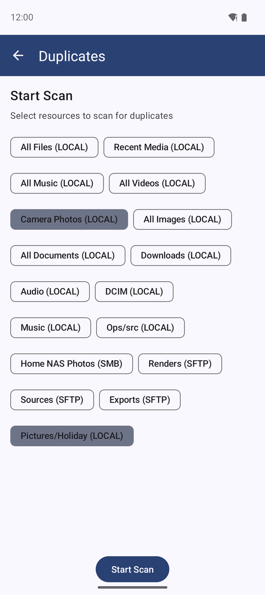
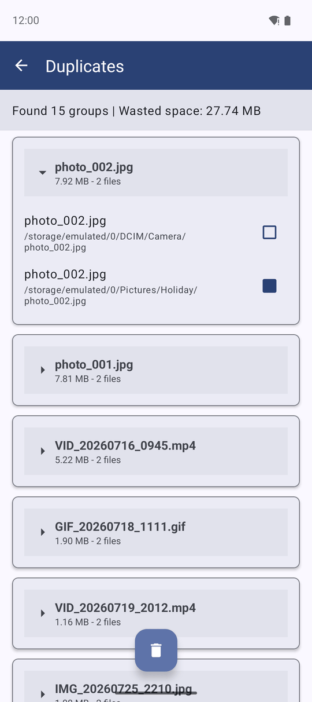
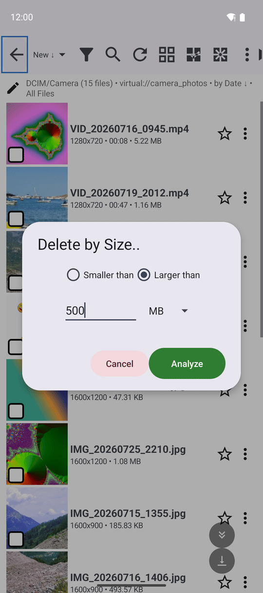
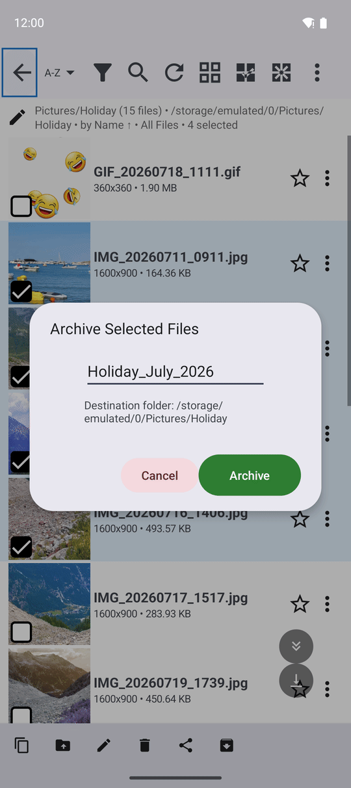

Freeing Space - Duplicates, Big Files and ZIP Archives
Find identical files across your folders and delete the extra copies, remove every file above or below a chosen size in one go, and pack selected files into a ZIP archive.
Why You'll Love This
The phone says the storage is almost full. Somewhere in the camera roll, the WhatsApp folder and the old backup from the laptop, the same photos sit three times over, and a few forgotten screen recordings take gigabytes each.
This page shows three tools that deal with it: a finder for identical files, a way to delete files by size, and a ZIP packer that turns a pile of small files into one tidy archive.
- ✓ Finding duplicates and deleting by size: the Standard, noLegal, Legacy and VR editions.
- ✓ ZIP archives: every edition - Standard, noLegal, Lite, Photos, Legacy, VR and FOSS.
- ✓ A resource you can write to. ZIP archives are made from files on this device only.
Start the search for duplicates
Open a resource in the file browser, open the three-dots menu at the top and tap Find Duplicates. The Duplicates screen opens with a list of all your resources - "Select resources to scan for duplicates". The resource you came from is already ticked and sits at the top; tick any others that may hold copies, for example the camera folder and the WhatsApp folder together.
Tap Start Scan. If a network or cloud resource is ticked, the app warns first: "Network scan may take a long time and consume a lot of traffic. Continue?"

Look at the groups of identical files
The app compares files in three rounds - first by size, then by their first few bytes, and at last by their complete content - so only truly identical files end up together, however they are named. The scan keeps running with a notification if you leave the screen.
The result is a list of groups, the biggest waste first: each group says how many files it has and how much space the extra copies take ("Wasted space: 240 MB"). In every group the app has already ticked all copies except the oldest one, which it treats as the original.

Delete the extra copies
Change the ticks if you want to keep a different copy - you can also drag across several files to tick them at once - or delete one file with its own delete button. Then tap Delete Selected, which shows how many files and how much space it will free. Confirm, and the selected copies are deleted for good.
In a hurry? Find and Delete Duplicates in the same menu opens the same screen, ready to delete right after the scan.
The app asks 'Are you sure you want to permanently delete..?' before it deletes. Look through the ticks once more - especially in groups where the copies sit in different folders.
Delete every file above or below a size
In the file browser's three-dots menu tap Delete by Size... In the window choose:
- Smaller than or Larger than.
- A number, and the unit KB, MB or GB.
Tap Analyze. The Confirm Deletion window shows how many files match and how much space you will free, for example "Files found: 18, Space to free: 6.2 GB". If nothing matches, the app says "No matching files found". Tap Delete Files to delete them.
Handy for two jobs: Larger than 500 MB finds forgotten videos, and Smaller than 20 KB finds tiny thumbnails and broken pictures that clutter a folder.

On a network or cloud resource the confirmation adds a red line: 'Warning: trash is not supported for this resource. Deletion will be permanent!' On the phone's own folders deleted files go to the trash when it is switched on - see Copying, moving and deleting files.
Pack files into a ZIP archive
In a folder on this device, select the files you want to pack (long-press the first one, then tap the others). Open the three-dots menu and tap Archive. The item is shown but grayed out until at least one file is selected.
The Archive Selected Files window suggests a name - the first file's name, or today's date. Change it if you like (without .zip, the app adds it) and check the line Destination folder - the archive is saved in the folder you are looking at. Tap Archive.
A progress window counts the files ("12 of 40: IMG_2031.jpg") and can be canceled; a canceled archive is removed, so no half-made file is left behind. At the end you see "Archive created: holiday.zip (40 files)". If an archive with that name already exists, the new one is named holiday_1.zip rather than replacing it.

What You Get
The same photo is kept once instead of three times, the forgotten giant videos are gone, and the scans of old documents travel as one ZIP file. The storage bar on your phone has room again.
Tips and Troubleshooting
- Duplicates between the phone and a network folder can be found too - tick both resources. Expect it to take longer, because the network files have to be read.
- Archives from network or cloud files are not possible: 'Archiving is only supported for local files.' Copy the files to the phone first.
- See how much you have already freed: with statistics collection on, the Freed space card adds up every byte your deletions gave back - see Usage statistics.